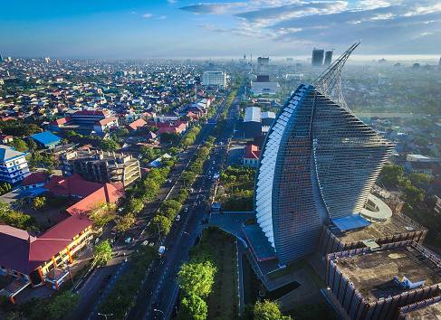

Sejarah Kota Makassar
Timeline sejarah Makassar cukup berliku dan bisa dirunut kira-kira sepanjang 400 tahun lamanya. Bermula dari sebuah wilayah kecil di muara Sungai Tallo, wilayah ini lalu berkembang menjadi pelabuhan niaga kecil di bawah kekuasaan Kerajaan Siang. Namun, selama abad ke-16, Sungai Tallo mengalami pendangkalan akibat kegiatan pertanian di daerah hulu. Nyaris bersamaan dengan pemisahan dari Kerajaan Siang, bandar atau pusat kota kemudian dipindahkan ke muara Sungai Jeneberang. Wilayah Makassar lalu dikelola oleh para ningrat dari Kerajaan Gowa-Tallo. Sebuah benteng pertahanan baru pun dibangun, Benteng Somba Opu namanya. Benteng itulah yang kemudian menjadi cikal bakal pusat Kota Makassar. Pada Jumat, tepatnya 9 November 1607, diadakanlah salat Jumat pertama di Masjid Tallo. Pada saat itu Raja Gowa-Tallo memeluk agama Islam dan diikuti secara resmi oleh seluruh penduduk kerajaan. Pada saat yang bersamaan, salat Jumat juga digelar di Masjid Mangallekana di Somba Opu. Tanggal itulah yang selanjutnya dipatok sebagai hari jadi Kota Makassar sejak 2000, yang sebelumnya selalu diperingati setiap 1 April.
Makassar pada masa lalu -dengan berbagai macam sebutannya- pernah menjadi salah satu pusat kebudayaan di Nusantara, bahkan dunia. Banyak cendekiawan dan utusan dari negara atau kerajaan lain bermuhibah akademis ke Makassar. Atas nama ilmu pengetahuan, sekitar pertengahan abad ke-17, Karaeng Pattingalloang -yang saat itu menjabat Perdana Menteri Kerajaan Gowa- mendatangkan sebuah bola dunia raksasa ke bandar Makassar. Bola dunia bergaris tengah 1,3 meter itu dibuat langsung oleh Joan Blaeu, seorang kartograf masyhur dari Amsterdam. Setahun setelah kedatangan bola dunia itu, Karaeng Pattingalloang bahkan mendatangkan salah satu dari tiga teleskop yang dibuat oleh ilmuwan ternama Italia, Galileo Galilei.
Makassar kini telah berkembang menjadi kota kosmopolitan yang heterogen. Beragam suku bangsa hidup berdampingan dengan damai. Setidak-tidaknya ada empat etnis besar yang mendiami Makassar, yaitu Bugis, Makassar, Mandar, dan Toraja. Selain oleh keempat etnis tersebut, warna budaya Makassar juga turut dibentuk oleh etnis lain, seperti Jawa dan Tionghoa. Etnis Tionghoa bahkan telah lama menempati satu wilayah tertentu di Makassar yang sekarang ini lebih dikenal dengan China Town atau Pecinan. Sebagai wilayah pesisir, Makassar sering digaungkan sebagai kota wisata bahari. Sejarah suku bangsa di Sulawesi memang banyak diisi dengan kisah-kisah heroik nenek moyang yang merupakan pelaut atau nelayan. Kemasyhuran daya jelajah phinisi dan sandeq juga turut mengangkat citra Makassar pada khususnya dan Sulawesi pada umumnya sebagai wilayah bahari. Namun, tidak hanya wisata bahari yang ada di Makassar. Wisata kota, wisata alam, wisata sejarah dan budaya, wisata permainan, dan-yang paling penting-wisata kuliner, tak habis-habisnya akan memanjakan Anda.